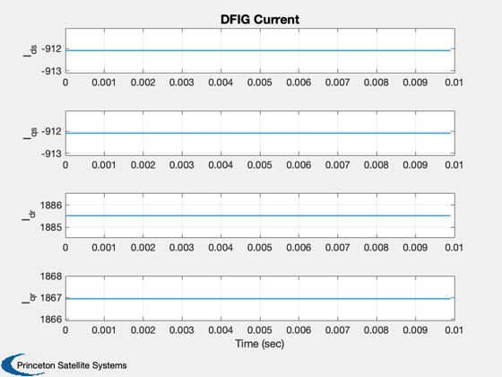
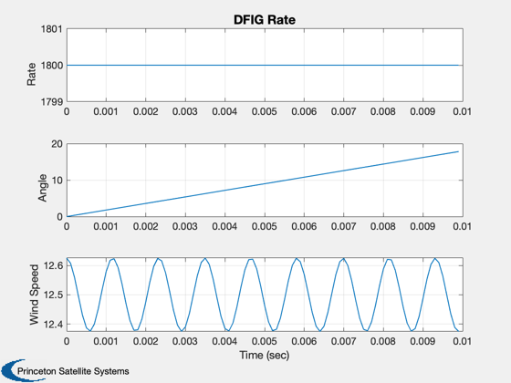
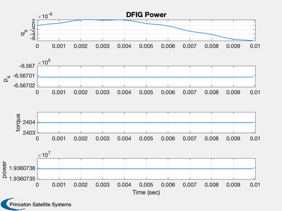
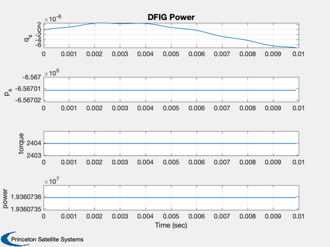

Simulate a doubly fed inductance generator.
Doubly fed induction generators are popular for large wind turbines. Doubly fed means we feed both the rotor and stator. This demo is done with both rotor and stator in Direct Quadrature (DQ) coordinates. The controller computes an equilibrium solution then employs a linear quadratic regulator about that solution. This controller controls reactive and active power. ------------------------------------------------------------------------ See also Plot2D, TimeLabl, RK4, DFIGEquilibrium, DFIGRHS, TorqueHAWT, WindDeterministic, WindStochastic ------------------------------------------------------------------------
Contents
%--------------------------------------------------------------------------- % Copyright (c) 2008, 2010 Princeton Satellite Systems, Inc. % All rights reserved. %---------------------------------------------------------------------------
Simulation parameters
%----------------------
nSim = 100;
dT = 0.0001;
Wind turbine parameters
%------------------------- fGrid = 60; rTurbine = 50; wMean = 12.5; d.p = 2; % Number of pole pairs omegaW = 8*wMean/rTurbine; omegaGrid = fGrid*60;% In rpm rpsToRPM = 30/pi omegaW = rpsToRPM*omegaW; nGearbox = omegaW/(omegaGrid/d.p) omegaM = omegaW/nGearbox;
rpsToRPM =
9.5493
nGearbox =
0.01061
Reference reactive power
%-------------------------
qRef = 0;
Model parameters
%----------------- angle = 0; % Rs = 0.05 ohm; Rr = 0.38 ohm; M = 47.3 mH; Ls = 50 mH; % Lr = 50 mH ; J = 0.5 kg.m^2; f = 0.0035 N.m.s-1
Generator parameters
%--------------------- d.lM = 47.3e-3; % Mutual inductance (H) d.lR = 50e-3; % Rotor inductance (H) d.lS = 50e-3; % Stator inductance (H) d.rR = 0.38; % Rotor resistance (Ohm) d.rS = 0.05; % Stator resistance (Ohm) d.u = [120;120;0;0]; % Phase voltages [uDR;uDQ;uDS;uQS] (V) d.omega = 2*pi*fGrid;% Synchronous speed (rad/s) d.tM = 0; % Mechanical torque (Nm) d.j = 0.5; % Inertia (kg-m^2)
Wind model
%----------- d.tau = 1; d.n = 3; % blades/harmonics d.dT = dT; d.sigmaWind = 0.5; d.dTF = rTurbine/wMean; windFactor = 0*0.3; omegaWind = 10; d.wMean = wMean; d.wHarm = 0.01; WindStochastic( 'init', d );
Turbine model
%--------------
d.rTurbine = rTurbine;
d.beta = 0;
d.rho = 1.225;
d.startup = 0.02;
xP = zeros(17,nSim);
t = 0;
Wind
%----- d.angle = 0; d.wMean = wMean*(1 - windFactor*sin(omegaWind*t)); d.wind = WindStochastic( 'run', d ) + WindDeterministic( d );
Find the equilibrium solution
%-------------------------------
[d.tM, power] = TorqueHAWT( omegaM, d );
[uR, x] = DFIGEquilibrium( qRef, omegaM, d )
d.u(3:4) = uR;
uR =
4.4714e+05
-4.5154e+05
x =
-912.08
-912.08
1885.5
1866.9
1800
0
Simulation loop
%---------------- for k = 1:nSim d.angle = x(6); % Wind %----- d.wMean = wMean*(1 - windFactor*sin(omegaWind*t)); d.wind = WindStochastic( 'run', d ) + WindDeterministic( d ); % Plot %----- [xDot, tE, q, p] = DFIGRHS( x, t, d ); xP(:,k) = [x;d.wind;d.u;q;p;d.tM;power]; % RHS %---- x = RK4( 'DFIGRHS', x, dT, 0, d ); t = t + dT; end [t, tL] = TimeLabl( nSim, dT );
Plot
%------- xL = {'I_{ds}', 'I_{qs}', 'I_{dr}', 'I_{qr}','Rate','Angle','Wind Speed',... 'u_{ds}', 'u_{qs}', 'u_{dr}', 'u_{qr}','q_s', 'q_r', 'p_s', 'p_r',... 'torque', 'power'}; k = [12 14 16 17]; Plot2D( t, xP( 1: 4, :), tL, xL( 1: 4), 'DFIG Current' ) Plot2D( t, xP( 5: 7 , :), tL, xL( 5: 7), 'DFIG Rate' ) Plot2D( t, xP( 8:11 , :), tL, xL( 8:11), 'DFIG Control') Plot2D( t, xP(k, :), tL, xL(k),'DFIG Power' ) % PSS internal file version information %-------------------------------------- % $Date$ % $Id: 235032ab9664ff4a36906f7cbf315e1cd13f9d68 $ 
 
